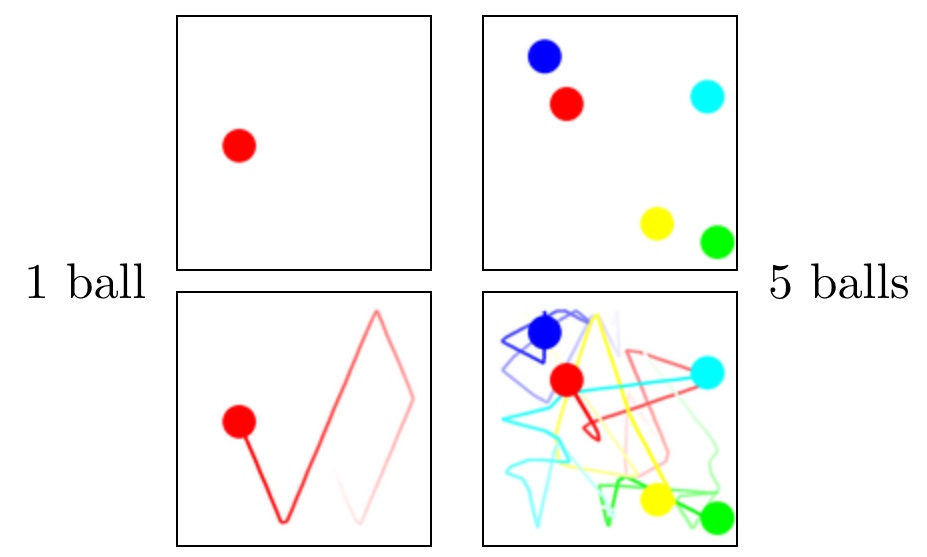
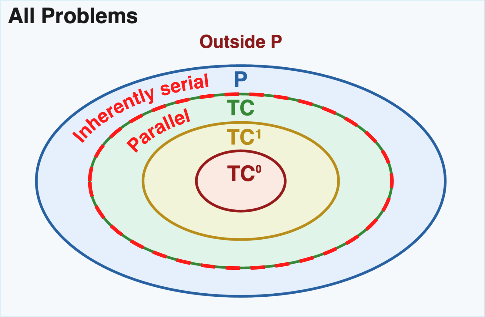
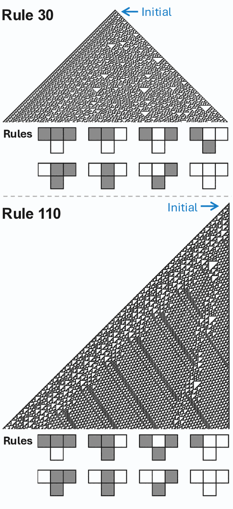
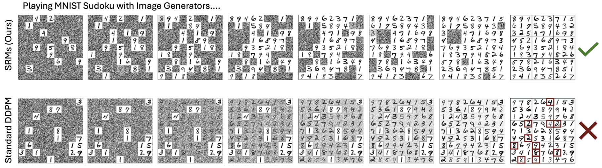
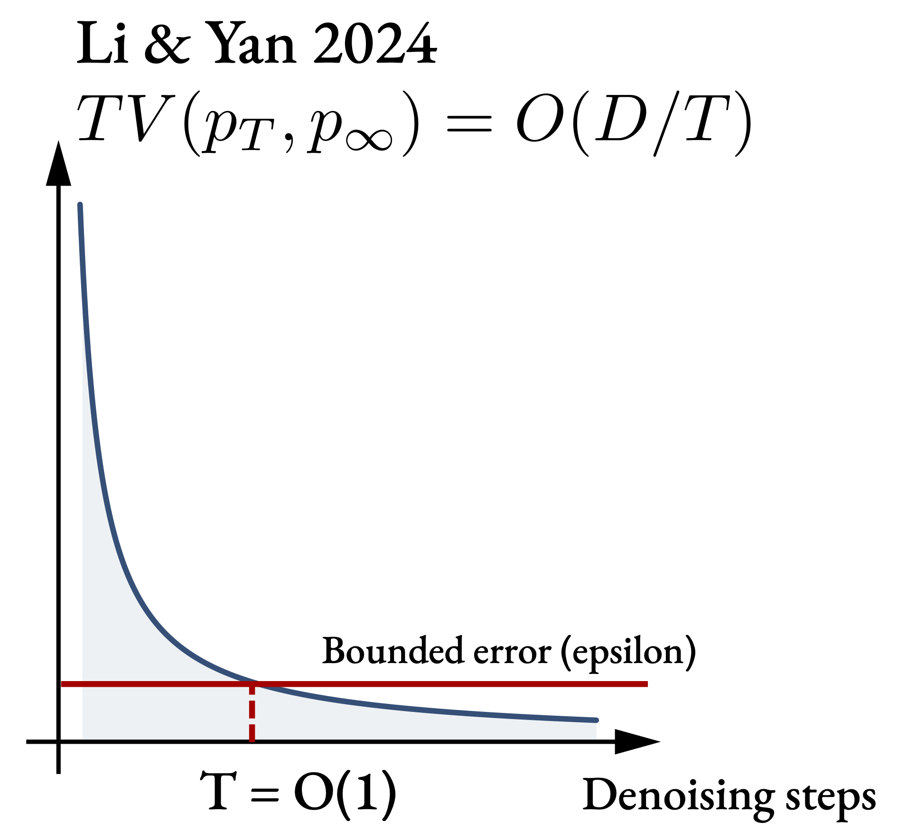

A paper companion · Liu · Preechakul · Kuwaranancharoen · Bai
The Serial Scaling Hypothesis
A pattern hiding in plain sight.
Machine learning has spent a decade making parallel compute cheaper. GPUs got wider. Transformers replaced RNNs because they were embarrassingly parallel. Scaling laws told us to add more chips and more tokens, and for a while, everything got better.
And yet reinforcement learning plateaued until model-based methods added planning. Language models plateaued on hard math until chain of thought added intermediate steps. Depth beat width on benchmark after benchmark. Each time the fix looked different; each time, it was a way of buying more sequential computation.
At the same time, complexity theory has for decades told a simple story: some problems are inherently serial. No amount of parallel compute shortens the longest chain of dependent steps they require.1In principle, you can trade depth for exponentially wider circuits — but “exponentially more” is another word for “intractable,” so the escape hatch is theoretical.
The two observations fit together. Machine-learning problems are not fundamentally different in kind from the problems complexity theory has studied for half a century. If the rules bind them, they bind us. That is what this paper argues.
What the hypothesis does, and why it is needed.
What does it do?
Two things.
First, it names a pattern the field has already navigated, over and over. Almost every time modern machine learning cleared a bottleneck — deep nets over SVMs, chain of thought over one-shot answers, MCTS over raw policy nets — the move was, in hindsight, to buy more serial computation. The hypothesis makes that rhyme explicit and invites us to use it as a design lens for what to try next.
Second, it connects deep learning to a body of theory we have mostly been able to ignore. Complexity theory has known for half a century that some problems resist parallelization (Greenlaw, Hoover & Ruzzo, 1995). If the hypothesis is right, that theory has practical things to say about architecture and scaling — it stops being a separate subject.
Why is it needed now?
Our instincts as a field have been trained on the parallel regime.
- In 2017 we mostly stopped training RNNs (serial) and moved to Transformers (parallel), because Transformers scaled.
- The 2020-era scaling laws measure compute as an undifferentiated aggregate. They do not distinguish serial from parallel FLOPs.
- Test-time scaling, as it is discussed today, often does not either.
- Diffusion models — one of the main candidates for reasoning under a generative framing — look serial but, we will show, are not.
The parallel-is-everything mindset is baked into our tools, our intuitions, and our theory of scaling. Not all FLOPs are equal — at least not for serial problems. On a serial problem, a serial FLOP can buy depth that no amount of parallel FLOPs will; on a parallel problem, the two are fungible. The ask of this paper is modest: treat that distinction as first-order, rather than as a rounding error on total compute.
Serial and parallel.
Nine women cannot make a baby in one month. — after Fred Brooks, The Mythical Man-Month (1975)
One ball, five balls.
Take a single ball bouncing inside a box. Where is it after ten seconds? You could simulate the bounces one at a time — but you could also just compute it: reflect the trajectory off each wall using a closed-form expression, and jump ahead. One ball is essentially a parallel problem. Any horizon, any processor count, roughly one lookup.
Now put five balls in the box.
Each collision depends on the state after the previous collision. A pair of balls that collide at step 47 only collide because some earlier collision put them on that trajectory. You cannot compute the state at step 100 without knowing the state at step 99, and you cannot know step 99 without step 98, and so on back to step 1. The problem is inherently serial. No amount of parallel compute shortens the chain.

Complexity theory, briefly.
Complexity theory has a precise language for this. A problem is in TC (the parallelizable class) if it can be solved by a circuit with polynomial width2The “polynomial width” qualifier is what makes this a definition of efficient parallelism. If any width were permitted, depth would barely matter: the Universal Approximation Theorem shows that a shallow network with sufficiently many units can represent almost anything. But “sufficiently many” is typically exponential, and exponential is intractable. Polynomial width is the boundary between “can” and “can afford.” and poly‑logarithmic depth. TC⁰ is the subclass solvable with constant depth — fixed‑depth, polynomial‑width circuits. Problems outside TC, and problems outside TC⁰ but inside TC, are serial in a precise, provable sense3Like most of complexity theory, the whole distinction rests on a conjecture we cannot yet prove: TC ⊊ P — not every polynomial‑time problem is parallelizable. If TC = P were ever shown, every problem in P would admit a poly‑log‑depth parallel solution, the serial/parallel distinction would collapse inside P, and our hypothesis would lose its footing. Essentially everyone in the field believes TC ⊊ P (Greenlaw, Hoover & Ruzzo 1995), but the reader should know the foundation is a belief, not a theorem — of the same species as P ≠ NP.: any efficient solution executes a chain of dependent steps that grows with the problem size.4Stephen Wolfram popularized a useful name for this: computational irreducibility. Some computations have no shortcuts — running them is the only way to learn what they produce. One might reasonably object that the whole point of machine learning is to find shortcuts: learning a function is, in large part, discovering that a problem is more reducible than a naive algorithm would suggest. That's right, and it explains a great deal of the field's success. But reducibility is not infinite. For any given task, we exploit the shortcuts that exist; what remains is irreducible by definition. How much of a task's computation is irreducible is precisely what tells us how much serial compute we should be prepared to spend on it at inference time.
An important bridge: the computational class of a problem has a natural analog for models. A model that always returns its answer in a fixed number of steps — one forward pass — is, in effect, a fixed‑depth circuit. That model can solve only problems in TC⁰, no matter how wide it is. A model that runs for a number of steps that grows with the problem (a genuine serial chain, like an RNN, or an autoregressive Transformer generating $N$ tokens) may be able to solve problems beyond TC⁰. “May” because the potential is there; whether a given model actually uses it is a separate question.
Two common confusions worth naming.
Transformers. A Transformer's single forward pass is TC⁰. This surprises people. The serial‑looking behavior you see with a language model comes from autoregressive decoding — generating one token at a time, $O(N)$ forward passes deep — not from the architecture itself. The next token is always a fixed‑depth computation; the sentence is not. The Transformer has the potential to solve problems beyond TC⁰ this way, which is why chain‑of‑thought matters.5Potential, not guarantee. Whether Transformers plus autoregression can solve every P‑complete problem is a separate open question, and not one we take a position on here.
Universal approximation. It is easy to hear “three‑layer MLPs are universal approximators” and conclude that depth does not matter. The universal approximation theorem is about existence, not efficiency. Matching a deep network with a shallow one typically requires exponentially more width. In practice that exponent makes the shallow solution unusable. The observation that deeper networks work better than wider ones, at matched parameter counts, is an empirical discovery of the field (not a proven fact for, say, image classification); the complexity‑theory intuition is that shallow networks cannot compactly represent the compositions that deep ones can.
The map.

Problems (tasks)
In TC⁰, parallelizable: many perceptual tasks, low‑$N$ arithmetic, template pattern matching.
Proven outside TC⁰ in their general cases, inherently serial: cellular automata6Cellular automata. A grid where each cell's state at the next tick is a simple local function of its current neighbours. The Wolfram rules “110” and “30” are one-dimensional examples; iterating them from a short row produces the striped patterns below. Rule 110 is Turing‑complete: predicting its long‑run state is as hard as running an arbitrary computation. 
Models (by inference-time depth)
TC⁰ inference (one forward pass, fixed depth): MLPs, feed‑forward Transformers, state‑space models like Mamba, diffusion models with a TC⁰ backbone — even when they take hundreds of denoising steps (see § 5).
Potentially beyond TC⁰ (inference time grows with problem): RNNs, looped transformers, chain‑of‑thought Transformers.
These two lists interact directly. A model's inference‑time depth upper‑bounds the class of problems it can solve efficiently. A fixed‑depth model cannot do better than TC⁰, no matter how wide you make it.
Many of ML's bottlenecks have been cleared by adding serial compute.
If the hypothesis is right, we should expect the pattern to show up repeatedly across the field's history. It does.
Depth itself.
A three‑layer MLP is a universal approximator — in theory. In practice, ImageNet didn't fall to a wide three‑layer net; it fell to a deep one. Every subsequent breakthrough (ResNet, Transformer language models, diffusion U‑Nets) went deeper, not wider. No one has proven depth is necessary for image classification — the field discovered this empirically, one benchmark at a time — but the complexity‑theory intuition is that shallow networks have to pay an exponential price in width to match what deep ones compose naturally.
Chain of thought.
A fixed Transformer's single forward pass is TC⁰ — a constant‑depth circuit. Adding CoT tokens lets it run more serial steps, one per token, and provably expands the class of problems it can solve beyond TC⁰.7The key references: Wei et al. (2022), Chain‑of‑Thought Prompting Elicits Reasoning in Large Language Models (NeurIPS); Li et al. (2024), Chain of Thought Empowers Transformers to Solve Inherently Serial Problems (ICLR); Merrill & Sabharwal (2024), The Expressive Power of Transformers with Chain of Thought (ICLR). The first is the canonical CoT paper; the latter two formalize why it works. The practical version: more reasoning tokens, better math, and sequential scaling beats parallel majority‑voting at matched token budget.8Aggarwal & Welleck (2025), L1: Controlling How Long A Reasoning Model Thinks With Reinforcement Learning. Shows that, at a matched token budget, letting the model think sequentially outperforms drawing many short samples and majority‑voting.
Looped transformers.
Same idea, cleaner: just run the network more times. Depth by repetition, without retraining from scratch.
Model-based RL.
AlphaGo's edge over policy‑only baselines was MCTS — serial planning. Every unit of additional tree search adds a serial step of lookahead. Policy‑only reinforcement learning plateaus without it.
Depth over width in RL.
Wang et al. (2025)9Wang, Javali, Bortkiewicz, Trzciński & Eysenbach (2025), 1000 Layer Networks for Self‑Supervised RL: Scaling Depth Can Enable New Goal‑Reaching Capabilities (NeurIPS 2025 Best Paper). trained 1000‑layer networks for self‑supervised RL and showed depth — not width — unlocks goal‑reaching behaviors. A 2× deeper network beat a 16× wider one on Humanoid, the task with the largest observation and action spaces.
In each of these cases, a ceiling that looked like a general architectural or data bottleneck turned out, on reflection, to be a serial ceiling, and the fix was more serial compute. Not every ML progress story fits this mold; but enough of them do to make the pattern worth naming. Which brings us to the one serial‑looking thing the field has not yet unblocked.
Why diffusion models are not serial reasoners.
Diffusion models look like they should be serial reasoners.
They take hundreds of steps. They refine their output gradually. They look, superficially, like the model is thinking. If you fed a diffusion model a sudoku puzzle and asked it to denoise into a solution, you might expect each step to close in on a consistent answer. And in fact a standard diffusion model will produce convincing‑looking sudoku solutions — the grids fill in, the numbers look plausible. They just tend not to be valid. Autoregressive approaches — including diffusion variants that fill the most‑confident cells first, which are effectively a more serial use of the same network — solve the puzzles reliably. The serial‑looking denoising chain, on its own, does not deliver the serial reasoning the task requires.

What's going on? Here is the claim.
If a problem can be solved by a diffusion model with a TC⁰ backbone with high probability, even with infinitely many denoising steps, then the problem is already in TC⁰.
Put plainly: adding more denoising steps does not let a diffusion model escape the complexity class of its backbone. A fixed‑depth network run for a thousand denoising steps still lives inside TC⁰ — the same class as the backbone itself. More steps can, and do, help within that class — better images, lower perplexity, tighter distributional fit. What they cannot do is unlock computations the backbone's class excludes. The constant in front of TC⁰ can change with $T$; the class boundary does not move.
This is surprising. Where does the apparent serial depth go?
The answer is that diffusion's serial chain is shallow in a precise sense. Li & Yan (2024)11Li & Yan (2024), $O(d/T)$ convergence theory for diffusion probabilistic models under minimal assumptions. The bound is TV $\le\,c\bigl(d_\varepsilon\,(\log T)^3 / T + \varepsilon_{\mathrm{score}}\sqrt{\log T}\bigr)$ (Thm. 1), with $d_\varepsilon$ the $\varepsilon$‑discrete intrinsic dimension. showed that the total variation between the $T$‑step denoising distribution and the true distribution falls as $O(D/T)$, where $D$ is the intrinsic dimension of the data. That means once $T = O(D/\varepsilon)$, the distribution is already within $\varepsilon$ of perfect. Beyond that, additional steps are noise — the score function is smooth enough in time that a bounded number of steps always suffice.
$$ \mathrm{TV}(p_T,\, p_\infty) \;=\; O\!\left(\frac{D}{T}\right) \qquad\Rightarrow\qquad T \;=\; O\!\left(\frac{D}{\varepsilon}\right) $$

This gives us a diffusion model that, with enough steps, is a bounded‑error TC⁰ circuit: a TC⁰ backbone, run a constant number of effective times, with an $\varepsilon$ chance of being wrong. A standard result in complexity theory says we can then derandomize such a circuit — run it many times in parallel and majority‑vote — and the whole thing collapses into ordinary, deterministic TC⁰.
The infinite denoising chain turns out to be, at best, a fixed‑depth circuit in disguise.
What this predicts.
It predicts things we already see. Image generation plateaus past a few hundred steps (Nichol & Dhariwal 2021). Depth estimation is nearly identical at 5 and 100 steps (Ravishankar et al. 2024). Language‑diffusion perplexity barely moves from 32 to 1024 steps (Austin et al. 2021). Distillation works — 1–4 step diffusion samples almost as well as the full chain (Salimans & Ho 2022; Yin et al. 2024) — because the useful depth was always constant.
Diffusion is an excellent parallelizer of a problem that already fits in a parallel class. It is not a shortcut to serial reasoning.
For the theorists · proof sketch
Proof sketch. Suppose a diffusion model $f_\theta$ with TC⁰ backbone solves the problem with high probability as $T \to \infty$.
Li & Yan (2024, Thm. 1) give
$$ \mathrm{TV}(\rho_0,\,\rho_{\mathrm{SMLD},0}) \;\le\; c\!\left( \tfrac{d_\varepsilon(\mathrm{supp}\,\rho_0)}{T}(\log T)^3 + \varepsilon_{\mathrm{score}}\sqrt{\log T} \right). $$
Fix $\varepsilon$. There exists $T^\star = O(D/\varepsilon)$ such that the $T^\star$‑step diffusion samples within $\varepsilon$ total variation of the target. $T^\star$ depends only on $D$ and $\varepsilon$ — both problem constants, not a compute budget.
Unrolling $T^\star$ denoising steps stacks $T^\star$ copies of the TC⁰ backbone, yielding a circuit of depth $T^\star \cdot d_{\mathrm{bb}}$, still constant. The chain is a randomized TC⁰ circuit with bounded error.
Derandomization. Replicate the network $k(n)$ times with independent seeds $s_1, \ldots, s_{k(n)}$ and take the majority vote. By Hoeffding's inequality, the probability of error is $\le e^{-2k(n)(p - 1/2)^2}$, driven exponentially to zero by polynomial $k$. Majority‑of‑TC⁰‑in‑parallel is TC⁰ (Hajnal et al. 1993, Prp. 4.2). $\blacksquare$
Escape hatches.
The theorem has two real limitations, and both point at what a serial‑compute‑scalable generative model might look like:
- If the intrinsic dimension $D$ grows with problem size, our upper bound loosens and the theorem no longer forces the model into TC⁰. That is a gap in what our proof covers, not a positive claim that diffusion suddenly becomes a serial reasoner: the upper bound only says “at most this much compute is needed,” and the model's effective computation may still be much shallower. We simply cannot rule TC⁰ out in this regime.
- The result assumes a TC⁰ backbone. A non‑TC⁰ backbone — a looped transformer, say — doesn't fall into the theorem.
Neither is a reason to deploy diffusion on sudoku. Both are directions a future paper could take.
Three downstream implications.
If the hypothesis is right, three things follow.
Architecture.
We have been picking architectures for how well they scale on GPUs. For serial problems, that criterion optimizes for the wrong thing. We should ask which architectures can actually go deeper, not just wider — looped transformers, RNNs used thoughtfully, models whose inference time is allowed to grow with the problem.
Hardware.
Amdahl's law returns. If the bottleneck is the length of the longest serial chain, buying more chips does not help; latency matters. This cuts against much of the current hardware roadmap, which is overwhelmingly a throughput story.
Problem framing.
For any given task, asking “is this serial?” changes what you try next. Some problems we currently throw feed‑forward Transformers at are serial‑hard in the precise sense of § 3, and no amount of scale is going to close the gap. Weighing a task's seriality against a model's serial depth opens a third move beyond architecture and hardware: if a task is too serial for the models we have, change the task.
Predicting the position of every particle in a room ten seconds from now is a serial problem: each collision depends on the one before it, and no known algorithm shortens the chain. But the macrostates of the same room — temperature, pressure, bulk flow — do not require tracking individual particles. Statistical mechanics describes them directly, at a coarser resolution where the prediction is no longer serial. Same physics; the choice of abstraction determines how serial the task is.
Acknowledgements.
We thank Alexei Efros, whose critiques of deep-learning theory helped ground us and motivated us to make this paper friendlier to non-theoreticians. We are grateful to William Merrill and Anant Sahai for their invaluable technical feedback and corrections, which significantly strengthened our theoretical analysis. We also thank Angjoo Kanazawa, Justin Kerr, Amil Dravid, Yossi Gandelsman, and Yuatyong Chaichana for their thoughtful comments and suggestions that helped improve the clarity and presentation of this work.
This work is partially supported by the ONR MURI N00014‑21‑1‑2801. YL was supported by a gift to the Center for Human‑Compatible AI at Berkeley from Coefficient Giving (formerly Open Philanthropy) during the development of this work.
Authors. Yuxi Liu∗, Konpat Preechakul∗, Kananart Kuwaranancharoen†, Yutong Bai. ∗Equal contribution. †Independent researcher. The Berkeley authors are at the Berkeley AI Research Lab.
Selected references
Aggarwal & Welleck (2025). L1: Controlling how long a reasoning model thinks with reinforcement learning. arXiv.
Austin, Johnson, Ho, Tarlow & van den Berg (2021). Structured denoising diffusion models in discrete state spaces. NeurIPS.
Fredkin & Toffoli (1982). Conservative logic. Int. J. Theor. Phys. 21(3–4), 219–253.
Greenlaw, Hoover & Ruzzo (1995). Limits to Parallel Computation: P-Completeness Theory. Oxford University Press.
Hajnal, Maass, Pudlák, Szegedy & Turán (1993). Threshold circuits of bounded depth. J. Computer & System Sciences 46(2), 129–154.
Li & Yan (2024). $O(d/T)$ convergence theory for diffusion probabilistic models under minimal assumptions. arXiv.
Li, Liu, Song & Jin (2024). Chain of thought empowers transformers to solve inherently serial problems. ICLR.
Merrill & Sabharwal (2024). The expressive power of transformers with chain of thought. ICLR.
Nichol & Dhariwal (2021). Improved denoising diffusion probabilistic models. ICML.
Ravishankar, Patel, Rajasegaran & Malik (2024). Scaling properties of diffusion models for perceptual tasks. CVPR 2025.
Salimans & Ho (2022). Progressive distillation for fast sampling of diffusion models. ICLR.
Silver et al. (2016). Mastering the game of Go with deep neural networks and tree search. Nature 529, 484–489.
Wang, Javali, Bortkiewicz, Trzciński & Eysenbach (2025). 1000 layer networks for self‑supervised RL: scaling depth can enable new goal-reaching capabilities. NeurIPS.
Wei, Wang, Schuurmans, Bosma, Chi, Le & Zhou (2022). Chain‑of‑thought prompting elicits reasoning in large language models. NeurIPS.
Wewer, Pogodzinski, Schiele & Lenssen (2025). Spatial reasoning with denoising models. ICML.
Wolfram (2002). A New Kind of Science. Wolfram Media.
Woods & Neary (2009). On the time complexity of 2‑tag systems and small universal Turing machines. FOCS.
Yin, Gharbi, Zhang, Shechtman, Durand, Freeman & Park (2024). Improved distribution matching distillation for fast image synthesis. NeurIPS.
BibTeX
@article{liu2025serial,
title = {The Serial Scaling Hypothesis},
author = {Liu, Yuxi and Preechakul, Konpat and
Kuwaranancharoen, Kananart and Bai, Yutong},
journal = {arXiv preprint arXiv:2507.12549},
year = {2025},
url = {https://arxiv.org/abs/2507.12549}
}
Site typeset in Fraunces. Last updated April 2026.